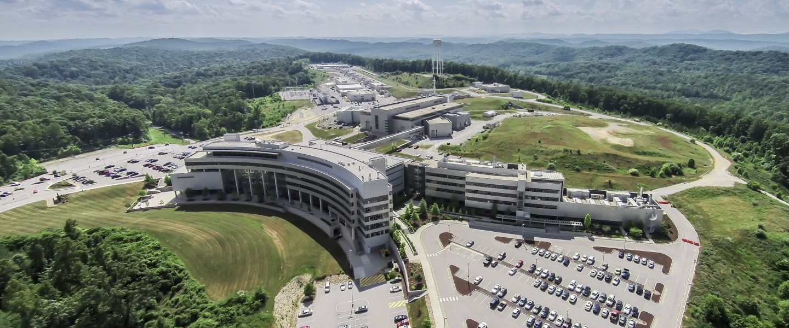
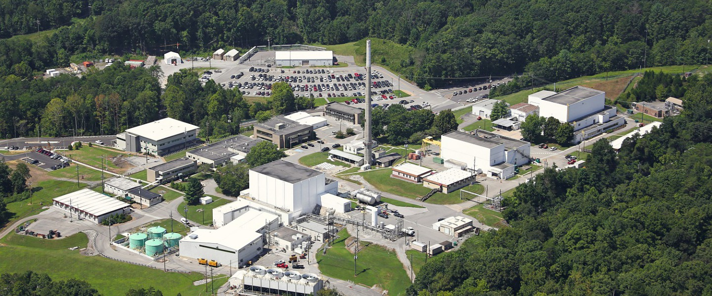

Gilbert Group
Classes
What is the DOE Career Award?

The Department of Energy Career Award is a program focused on promoting energy-related research performed by young researchers at US institutions. The award provides these research groups with ≈$150K for 5 years. The program itself is highly competitive, with a success rate of only ≈ 7%.
What is our CAREER award for?
 
Our award is titled "Exotic Uses of Neutrons and X-rays as Probes for Chiral Magnets". We propose to use neutron and X-ray scattering in unique ways to gain insight into tiny magnetic structures. The public abstract is provided here:
Computational architectures based on magnetism, termed spintronics, offer opportunities for low-power, miniaturized, highly-portable technologies. For most magnetic materials, the spins align parallel or antiparallel, but an alternative paradigm exists in-which the spins form twisted, chiral structures, e.g. helices, cycloids, and skyrmions. Magnetic skyrmions have a particularly exotic structure characterized by the spins continuously wrapping into a closed loop. The distinction between linear and chiral magnets can be appreciated by considering wind flowing in a continuous, linear path compared to vortex flow, like a tornado or hurricane. Chiral magnetic structures are also of interest due to their unique fundamental qualities which arise out of their non-trivial topology. Topology, in this context, means that chiral structures can be continuously distorted, but an energy barrier exists to their creation or destruction which lends stability and particle-like properties to the structure. Neutron and X-ray scattering play a critical role in the investigation of these structures due to their ability to resolve small features with only magnetic contrast. By leveraging recent advances in neutron and X-ray instrumentation, and applying creative experimental and sample environment design, it is possible to gain unparalleled insight into chiral magnets. In one research focus, measuring the small angle scattering from chiral magnets allows the three-dimensional structure to be determined; since the topology is defined by the geometry, it is critical to have a detailed understanding of the structure. In another research direction, time-resolved scattering can be used to capture the evolution of these structures in response to changing magnetic fields. In a third focus area, inelastic scattering can be used to measure the in-situ motion and structure of the chiral spin textures as they are dynamically excited. Understanding derived from this research will improve the ability to manipulate and control these unique structures for low-power spintronic technologies.
Other details:
This award will advance our understanding of these unique magnetic structures, moving the field of low-power spintronic technologies forward. This funding will support our graduate and undergraduate students as they transform to become the next-generation of researchers. The funding will not-only provide their stipend, but will also have them attend conferences and present their work, increasing their presence in the community and building their network. These works will include research at all three of the US Neutron scattering sources at ORNL (SNS and HFIR) and NIST (NCNR). One target of this research - beyond doing great science and growing the technically trained workforce - is to foster a collaborative environment between these facilities to promote a stronger overall research capability.
----------------------------------------------------------------------------------------------------------------------------------------------------------------------------------------------------------------------------------------------